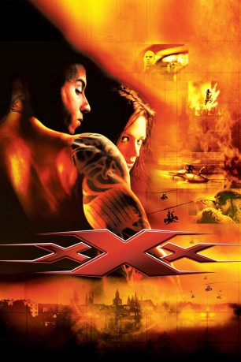

gesehen am 29.12.2016
gesehen am 29.12.2016Alternativ: xXx gesehen am 29.12.2016
 
 IMDB-Wertung: 5.9 / 10
IMDB-Wertung: 5.9 / 10  Metascore:
Metascore: 
Vin Diesel ist Xander “xXx” Cage, Extremsportler und Adrenalinjunkie. Der tattoowierte Draufgänger führt seine berüchtigten, lebensgefährlichen Stunts am liebsten in gestohlenen Luxusschlitten durch und besitzt nicht den geringsten Respekt vor jeglicher Autorität, ganz besonders nicht vor staatlicher – was xXx zum idealen Kandidaten für die Geheimmission des NSA-Agenten Gibbons macht. Dieser droht xXx mit einer Gefängnisstrafe, sollte er sich nicht bereit erklären, die äußerst gefährliche Untergrund-Organisation “Anarchie 99” zu infiltrieren. Unter der Führung des ehemaligen Soldaten Yorgi plant diese die Weltmächte USA und Russland mithilfe einer biologischen Waffe gegeneinander auszuspielen. Ein Himmelfahrtskommando wie es im Buche steht – genau das Richtige für xXx.
Jahr: 2002
Dauer: 124 Minuten
FSK: 12
Land: USA Studio: Columbia PicturesTonspuren: DD5.1 - ,
Untertitel: Englisch, Deutsch,
Auflösung: 1080p (1920x1080) Größe: 16179 MB
Regisseur:  Rob Cohen
Rob Cohen
Drehbuch: Rich Wilkes
Soundtrack: Randy Edelman
Darsteller:
 Vin Diesel als Xander Cage
Vin Diesel als Xander Cage Marton Csokas als Yorgi
Marton Csokas als Yorgi Samuel L. Jackson als Agent Augustus Eugene Gibbons
Samuel L. Jackson als Agent Augustus Eugene Gibbons Werner Daehn als Kirill
Werner Daehn als Kirill Danny Trejo als El Jefe
Danny Trejo als El Jefe Eve als J.J.
Eve als J.J. William Hope als Agent Roger Donnan
William Hope als Agent Roger Donnan Ted Maynard als James Tannick
Ted Maynard als James Tannick Marek Vasut als Czech General
Marek Vasut als Czech General Leonard L. Thomas als NSA Agent
Leonard L. Thomas als NSA Agent James Babson als Technician , uncredited
James Babson als Technician , uncredited Richy Müller als Milan Sova
Richy Müller als Milan SovaDatei: X:\3-Trilogie(N-Z)\xXx\xXx 1 - Triple X (2002, FSK12, 1920x1080).mkv seit 30.06.2015
Festplatte: HD Collection-3(N-Z)-6(A-Z)
 Es gibt insgesamt 7 Filme in der Gruppe '3-Trilogie(N-Z)\xXx'
Es gibt insgesamt 7 Filme in der Gruppe '3-Trilogie(N-Z)\xXx'